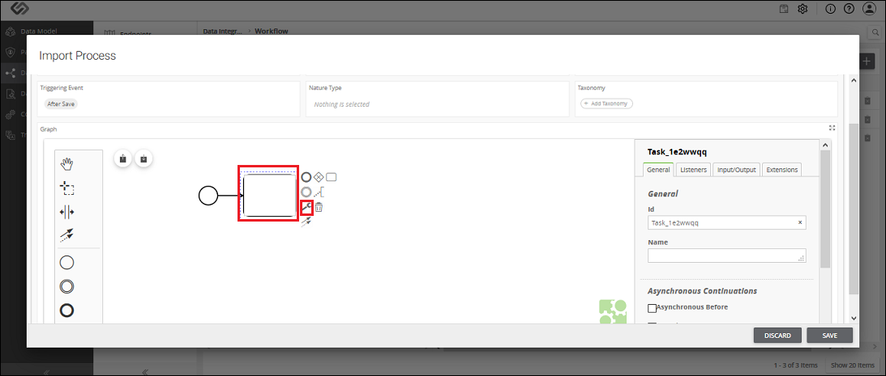
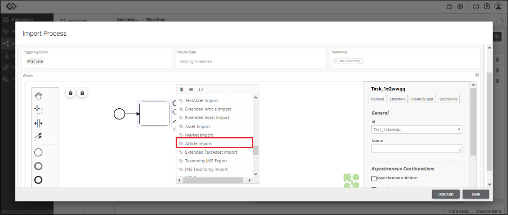
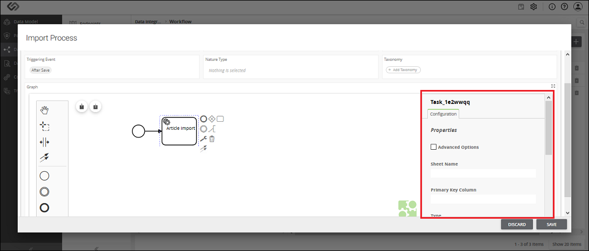

Article Import
Article Import component is used to import one or more articles to the system.



Article Import - Property Configuration
| Sr. No. |
Screen Element |
Description |
|---|
|
Sheet Name |
The onboarding file is the Excel file. Excel file may contain different sheets in it.
Here, we need to mention the sheet name which contains the article details. |
|
Primary Key Column |
All the articles in an onboarding file have unique identification or IDs.
Here, in Primary Key Column, we need to define the column name of the sheet which contains the unique IDs of the articles.
So, a system will fetch all the IDs of the product from the defined column of the sheet. |
|
Type |
Here we need to select one of following options:
- Single Class: Select this option, if all the articles in an onboarding file use the same class of the system.
For example, if all the articles are Individual Article or all the articles are PID.
- Column Class: Select this option, if articles in an onboarding file use different types of classes of the system.
For example, there are two articles in a sheet; one is Individual Article and the other one is PID.
|
|
Class ID/Class Column |
The value of this field is based on the selection of Type field.
- Class ID: When all the articles in an onboarding file use the same class of the system, we select the Single Class option from the Type field.
In this case, we need to select that system-generated class from the list as Class ID.
- Class Column: When articles in an onboarding file use different classes of the system, we select the Column Class option from the Type field.
In this case, we need to enter the column name of a sheet, which contains the IDs of all the classes in a Class Column field.
|
|
Multiclassification |
Select this option, if all articles in a sheet use non-nature classes. |
|
Type |
As soon as you select MultiClassification option, this option will be visible. Here, we need to select one of the following options:
- Multiple Class: Select this option, if articles in an onboarding file use multiple system-generated non-nature classes.
- Column Class: Select this option, if articles in an onboarding file use multiple non-nature classes which are yet to be created.
|
|
Select Classes/Column Name |
The value of this field is based on the selection of Type field:
- Select Classes: When all the articles in an onboarding file use multiple system-generated non-nature classes, we select the Multiple Class option from the Type field.
In this case, we need to select that system-generated classes from the list.
- Class Column Name: When articles in an onboarding file use multiple non-nature classes which are yet to be created, we select the Column Class option from the Type field.
In this case, we need to enter the column name of a sheet, which contains the IDs of all the non-nature classes in a Class Column Name field.
|
|
Taxonomies |
Here we need to enter the column name of a sheet of an onboarding file which contains the taxonomy details. |